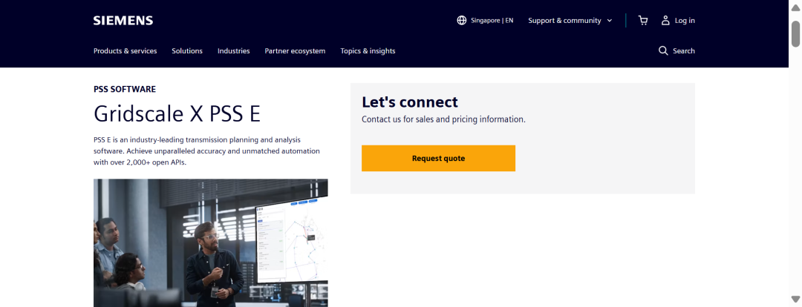
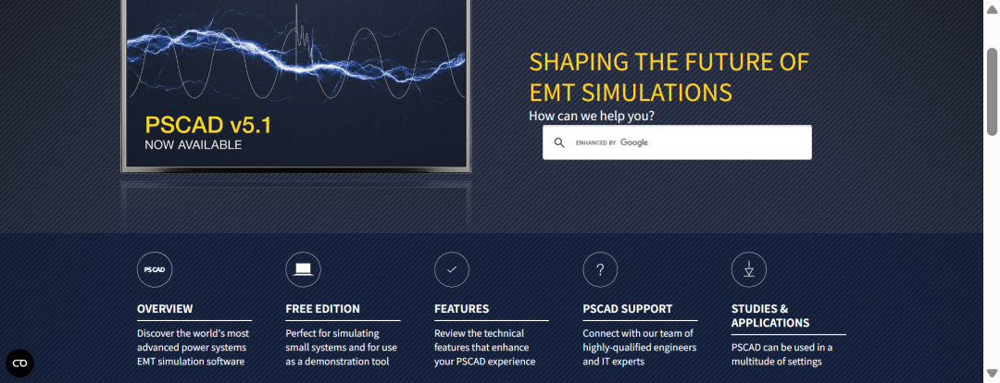
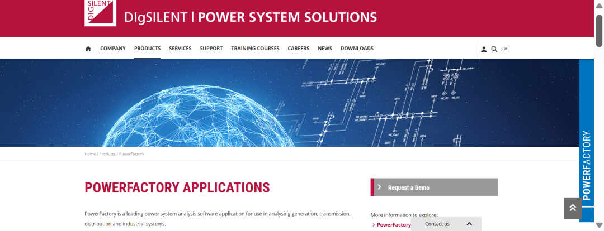

前言
深耕海外储能行业的从业者大多有过这样的困惑：自家储能设备硬件参数亮眼、UL/IEC全套安全认证齐全、报价性价比极具优势，却频频卡在海外项目投标初审阶段，连竞标短名单都无法进入。
究其根本，问题从来不在产品质量、硬件性能和报价价格上，而是绝大多数国内出海团队都存在核心认知盲区——忽视了动态模型（G1/G2/G3）这一海外储能并网、投标竞标一票否决的硬性门槛。
国内储能项目评审，核心看硬件参数、产品认证、静态测试报告；但欧美、澳洲、东南亚、非洲等海外主流市场，电网运营商（TSO/DSO）有着完全不同的审核逻辑，核心看仿真模型、并网适配性、电网稳定校核能力。
为了让所有非研发岗位的储能从业者快速补齐核心能力，本文从零到一梳理海外储能投标、并网评审全流程动态模型知识，摒弃晦涩的研发公式，聚焦业务实操、投标避坑、成本管控、项目落地，内容详实系统，适合全员收藏学习、团队内部分享。
一、核心认知：动态模型不是产品资料，是海外并网核心工程交付物
绝大多数售前、销售都存在一个致命认知误区：将PSS®E、PSCAD仿真动态模型，等同于普通的产品手册、Datasheet参数表、宣传技术附件。但在国际储能电网并网（Grid Integration）体系中，动态模型的定位完全不同。
动态模型本质是电网合规准入专属工程交付物，是整套储能电站的官方数字孪生系统，也是各国电网运营商开展并网安全性、稳定性评估的唯一核心依据。
海外电网从来不信任厂家自述的纸面参数。核心原因在于，静态产品参数只能证明设备单机出厂性能达标，无法模拟设备接入真实电网后的运行状态，更无法验证储能设备+特定地域电网+现场复杂工况组合体系下，电网是否会出现电压波动、频率偏移、功率振荡、设备脱网等安全隐患。而动态模型的核心价值，就是提前仿真、预判、规避所有并网风险。
目前全球主流电网均执行统一的投标铁律：
No PSS®E Model, Bid Rejected（无机电机电暂态模型，直接废标）
No PSCAD Model, Non-Compliant（无电磁暂态模型，投标资质不合规）
动态模型不是项目加分项、可选服务，是所有海外大型电网侧储能项目的基础准入底线。同时，美国FERC Order 2023、北美NERC PRC系列标准、IEEE 2800、IEC 62933等全球通用行业法规，均强制要求并网储能电站提交经验证的动态模型。国内储能企业海外拓展进度缓慢，核心短板并非硬件制造能力不足，而是国际电网合规体系认知缺失、动态模型开发与验证能力薄弱。
二、纠正核心行业误区：模型是全站模型，而非单一PCS设备模型
行业内普遍存在一个错误认知：一台PCS对应一套PSS®E模型、一套PSCAD模型，只需提供单设备仿真文件即可满足投标要求。这也是国内厂商海外投标高频失利的重要原因。（注：在实际项目投标时，建议跟EPC客户澄清是要单PCS就行，还是需要整套系统。）
海外电网的真实评审标准十分明确：业主和电网需要的不是孤立的PCS设备模型，而是完整储能电站全链路仿真模型，必须覆盖电站所有设备的耦合运行逻辑。
完整建模链路：电芯 → 电池簇 → BMS电池管理系统 → PCS储能变流器 → PPC电站控制器 → 升压变压器 → 场内集电线路 → 外网输电线路及电网
模型需要精准还原全链路设备的电气参数、控制逻辑、通信延时、多设备耦合响应关系，完整复现电站真实运行状态。简单来说，海外项目考核的是厂商整站并网仿真与适配能力，而非单一设备的参数仿真能力。
三、动态模型三维分类体系：行业通用标准化划分
国际储能行业经过长期发展，形成了一套成熟、统一的动态模型分类标准，可从仿真软件平台、仿真精度、定制化层级三个维度全面界定，覆盖项目可研、投标、中标、投运全周期。
3.1 按仿真软件平台划分（电网指定、不可替代）
海外电网招标文件会严格指定仿真软件类型及具体版本，使用非指定软件、版本不匹配的模型，会直接判定无效，投标初审淘汰。
1. PSS®E：西门子开发的全球电网机电暂态仿真标杆软件，是大电网潮流计算、频率稳定、电压调节、功率振荡分析的行业标准，主流应用版本包括v34、v35、v36，不同版本的计算算法存在细微差异，必须严格遵循项目业主、电网指定版本建模。

链接：
https://www.siemens.com/en-us/products/pss-software/gridscale-x-pss-e/
2. PSCAD：全球主流电磁暂态仿真专用工具，专注电力电子设备高精度微秒级瞬态仿真，可精准捕捉设备开关动作、故障瞬时响应，适配高低电压穿越、谐振抑制、高频振荡分析。北欧Fingrid、澳洲AEMO、北美各大电网均发布了专属的PSCAD建模规范。

链接：https://www.pscad.com/
3. DIgSILENT-PowerFactory（全能兼容平台）：欧洲储能并网项目的主流指定仿真软件，区别于前两款单一功能软件，该平台可同时支持RMS机电暂态仿真+EMT电磁暂态仿真，一机覆盖G1、G2全维度仿真需求。澳洲、北美部分电网项目也认可该软件模型作为备选合规交付物，内置标准化并网报告、潮流分析、稳定性校核工具，适配欧洲TSO专属并网规范，是国内厂商出海欧洲市场的必备建模能力，也是多数厂商的技术薄弱环节。

链接：https://www.digsilent.de/en/powerfactory.html
行业核心总结（3款核心仿真软件定位）
-
PSS®E：澳洲、北美电网刚需，专属G1机电暂态仿真，用于大电网宏观稳定校核；
-
PSCAD：全球通用EMT仿真标杆，专属G2电磁暂态精细校核，是设备故障仿真行业标准；
-
PowerFactory：欧洲市场主流，双模式兼容，可同时替代PSS®E、PSCAD完成全套并网仿真。
3.2 按仿真精度划分（G1/G2核心区分，投标必备）
G1、G2是海外投标、并网评审最核心的两类模型，二者分工互补、缺一不可，共同完成电网宏观稳定与设备微观安全的全维度校核。
|对比维度| G1 RMS 机电暂态模型 | G2 EMT 电磁暂态模型 | |:-------|:-------------------------------|:-----------------------------------------| | 仿真计算依据 | 50/60Hz电网基波均方根值 | 电压、电流实时瞬时波形 | | 仿真时间尺度 | 0.1–10秒，聚焦长周期机电运行过程 | 微秒–毫秒级，捕捉瞬时电力电子瞬态过程 | | 核心分析场景 |全网频率稳定、机组跳闸功率缺额、电网功率振荡抑制、大范围电压调节|LVRT/HVRT故障穿越、电网短路故障、站内谐振、PCS高频振荡、电池瞬态电压波动| | 适配软件平台 | PSS®E、TSAT | PSCAD | | 模型特性 | 模型简化度高、计算速度快、侧重全网宏观稳定性分析 | 建模细节完整、计算量大、仿真精度极高、侧重设备微观故障响应校核 |
通俗总结：G1模型看整体电网稳不稳，G2模型看单台设备故障扛不扛得住，二者缺一不可。
3.3 行业核心交付体系：3款软件、5类工程模型
结合海外电网并网评审规范与研发落地标准，储能动态仿真行业形成了固定的交付体系：3款核心仿真软件、5类工程模型。本节从「仿真颗粒度、技术形态、投标交付用途」维度拆解技术模型，和后文「按项目生命周期划分的四级定制模型」属于两套互补维度，不冲突、不重复，共同构成完整的海外储能模型知识体系，是投标答疑、成本测算、研发交付的核心标准。
模型1：PCS单机RMS机电暂态模型（G1基础组件模型）
适配软件：PSS®E、PowerFactory，仅用于机电暂态RMS有效值仿真。该模型聚焦单台PCS核心控制逻辑，简化电池电化学细节，精准还原PCS有功/无功调节、VF稳压、下垂控制、一次调频、故障后恢复等核心功能。主要作为场站模型的基础搭建单元，用于组装完整场站仿真模型，单独交付不具备投标、并网效力，仅用于内部仿真调试。
模型2：BESS场站级RMS机电暂态模型（完整G1投标模型）
适配软件：PSS®E、PowerFactory，是海外投标G1环节的最终合规交付物。区别于简单复制多台单机PCS模型，该模型整合全站设备耦合逻辑，包含电池簇、BMS、多PCS并联、PPC场站协调控制、变压器、集电线路等全链路参数，可精准仿真电网大范围功率扰动、机组跳闸、频率偏移、全网功率振荡等长周期工况，是电网评估场站宏观并网稳定性的核心依据。
模型3：PCS单机EMT电磁暂态模型（G2基础组件模型）
适配软件：PSCAD、PowerFactory（EMT模块），用于微秒级精细瞬态仿真。模型完整复刻PCS锁相环（PLL）、内环电流控制、脉冲调制、故障穿越阈值、高频抑制等底层逻辑，精准捕捉故障瞬间电压、电流瞬时变化，主要用于校核单机设备的短路耐受、高低电压穿越、瞬态振荡能力，是搭建场站EMT模型的核心基础。
模型4：BESS场站级EMT电磁暂态模型（完整G2投标模型）
适配软件：PSCAD、PowerFactory（EMT模块），是海外投标G2环节的法定交付物。基于单机EMT模型迭代搭建，整合多机并联耦合干扰、场内线路阻抗、变压器暂态特性、场站保护逻辑、通信延时等真实工况，专门用于校核站内谐振、PCS高频振荡、故障瞬间功率冲击、弱网瞬态失稳等微观风险，是高端电网项目强制要求的交付模型。
模型5：实测校准验证模型（G3合规校准模型）
适配软件：PSS®E、PSCAD、PowerFactory全平台，是G3报告的核心载体，也是唯一具备法定并网效力的最终模型。该模型并非全新开发的独立模型，而是在场站级RMS/EMT模型基础上，通过第三方实验室、现场电网扰动实测数据，迭代校准内部控制参数、优化算法逻辑，确保仿真波形与设备真实运行数据高度匹配（行业强制RMSE＜5%）。模型校准完成后，配套出具权威G3验证报告，是项目并网验收、电网归档的核心资料。
3.4 五类工程模型适配场景对照表
| 模型类型 | 适配仿真软件 |对应并网等级| 核心应用场景 | |:---------|:-----------------|:---------|:---------------| |PCS单机RMS模型|PSS®E、PowerFactory| G1基础模型 | 模型搭建、内部仿真调试 | | 场站级RMS模型 |PSS®E、PowerFactory| G1正式投标模型 | 全网频率/电压稳定校核 | |PCS单机EMT模型|PSCAD、PowerFactory| G2基础模型 | 单机设备瞬态故障仿真 | | 场站级EMT模型 |PSCAD、PowerFactory| G2正式投标模型 |站内谐振、故障穿越、高频振荡校核| | 实测校准验证模型 | 全平台通用 | G3合规验证模型 | 模型合规认证、并网归档验收 |
行业关键避坑要点（投标必看）
1. 投标阶段电网仅认可场站级完整聚合模型，仅提交单机PCS模型、简单复制多机参数，会直接初审废标；
-
PowerFactory支持RMS/EMT双模式仿真、适配欧洲项目，但澳洲、北美电网审核体系严格，仅认可PSS®E、PSCAD专属模型，不可随意替代；
-
G3不属于全新独立仿真模型，是对G1/G2场站模型做现场实测数据校准+第三方合规认证，是整套模型并网合规的最终闭环凭证。
3.5 按项目生命周期：模型四级定制分级
国际储能项目根据可研、投标、中标、投运全流程，将动态模型划分为四个精度层级，从标准化通用模板到项目专属竣工模型，适配不同阶段的评审与落地需求，是销售、售前把控项目节奏、核算建模成本的核心依据。
Level 1：Generic Model通用标准模型
由各国电网公司、第三方咨询机构统一发布标准化模板，仅包含设备基础额定参数，无厂家专属控制逻辑与算法。仅适用于项目前期可研、预可行性研究（Pre-FS），用于电网初步宏观测算，不具备投标、并网评审效力。澳洲AEMO、南非Eskom、英国National Grid等主流电网均公开通用BESS仿真模板。
Level 2：Vendor Generic Model 厂商通用模型
是海外项目投标阶段的核心合规交付物。由PCS设备厂家基于自有产品固定控制逻辑开发，内置PLL锁相环、PQ恒功率控制、电压无功调节、故障穿越等专属核心算法，可真实还原设备动态响应特性，但未针对具体项目电网参数做定制适配。
行业通用交付标准：提供PSS®E DLL动态链接库、PSCAD加密模型及配套用户操作手册。核心算法加密处理，既满足电网投标合规审查要求，又保护厂商核心知识产权，是目前全球投标项目最主流的交付形式。
Level 3：Project Specific Model 项目定制模型
是项目中标后、并网研究阶段的核心模型。基于厂商通用模型，结合项目现场真实电网参数、设备参数完成全方位调参优化，适配项目专属运行工况。
核心定制内容包含：电网短路比（SCR）、线路阻抗（X/R）、输电线路长度、变压器参数、场站装机容量、电网电压等级等；同时针对性优化下垂系数（Droop）、PLL带宽、电压控制增益、无功调节曲线等核心控制逻辑。
不同国家电网特性差异极大，例如澳洲弱电网（SCR≈2）、德国强电网（SCR≈20），同一套设备需适配完全不同的控制参数，否则仿真结果不达标、无法通过并网审核。该模型是电网开展并网研究、潮流计算、短路分析、稳定性校核的核心依据。
Level 4：As-Built Model 竣工实测模型
项目现场安装、调试、投运完成后，厂家依据现场实际PCS固件版本、PPC电站控制器版本、一次设备实测参数、线路真实运行数据，全面校准优化形成的最终版模型。
该模型是项目并网归档的法定文件，澳洲AEMO等主流电网强制要求永久存档，用于电网后续运行校核、扩容规划、故障溯源分析，是项目并网闭环的最后一步。
3.6 通用模型 vs 厂商自定义模型核心差异
电网仿真模型主要分为「软件通用库模型」和「厂商自定义模型（UDM）」两类，二者合规性、仿真精度、投标效力差异极大，是海外投标极易踩坑的细节要点。
通用库模型是仿真软件自带的标准化模板，开发周期短、成本低，但参数固定、无厂家专属控制策略，无法体现不同品牌储能设备的差异化并网特性，仅适用于项目前期粗略可研测算，不具备任何投标、并网审核效力。
用户自定义模型（UDM）是厂商基于自有硬件特性、核心控制算法自主开发的个性化模型，可精准还原设备真实并网响应、故障特性、稳压调频能力，是各国电网唯一认可的终审模型类型。其中PSS®E自定义模型通常需配套适配TSAT仿真文件，满足北美、澳洲高端电网校核要求。
四、G1/G2/G3模型交付标准与评审红线
海外招标文件将全套动态模型交付物统一划分为G1、G2、G3三类，三者构成投标合规铁三角，缺一即判定投标无效。
4.1 G1：PSS®E RMS机电暂态模型
核心用于仿真电网大范围功率扰动后的动态响应，校核储能电站的一次调频、虚拟惯量支撑、AGC调压、功率振荡抑制能力，是电网宏观稳定性评审的核心依据。
完整交付包：编译完成的Vendor DLL动态链接库、完整PCS控制算法源码、参数辨识报告、可复现的PSS®E工程文件。
评审硬性红线：禁止使用MATLAB/Simulink等非指定软件模型替代；仅提供加密黑盒DLL、无核心源码的模型直接驳回；模型必须搭载构网型控制逻辑，支持虚拟惯量、弱电网启动，纯并网型模型无法通过高端电网项目评审。
4.2 G2：PSCAD EMT电磁暂态精细模型
聚焦设备微观瞬态仿真，精准校核故障瞬间设备的动态响应，核心覆盖高低电压穿越、短路故障耐受、站内谐振抑制、PCS高频振荡、电池电压瞬态波动等关键工况。
强制建模要求：必须搭建电芯、BMS、PCS、PPC、变压器、集电线路全闭环仿真模型，精准还原设备通信延时、多机控制环路耦合等真实运行特性，缺一不可。模型仿真步长低至10\~50微秒，仿真精度远高于RMS模型，开发调试周期长、人力投入成本高。
4.3 G3：Model Validation Report 模型验证报告
G1、G2仅为仿真数字文件，G3验证报告是唯一能够证明模型真实有效、符合并网标准的法定凭证，无G3报告的仿真模型不具备任何评审效力。
报告核心作用：彻底杜绝厂家理想化虚假模型，验证仿真输出曲线与设备真实运行数据的一致性，满足FERC、IEEE、IEC等国际强制并网法规要求。
必备核心内容：第三方实验室或现场电网扰动试验原始实测数据、仿真与实测波形对标对比图表、全工况量化误差分析（行业强制标准RMSE＜5%）、UL/TÜV权威第三方盖章认证文件。需完整覆盖IEEE 1547.1标准12类核心测试工况，包含功率阶跃、频率扰动、三相/单相短路、无功调节、弱网启动等。
交付节点：项目投运前完成全工况实测与仿真校核，出具正式报告，随Level4竣工模型一并提交电网归档。
五、国际储能项目模型全流程交付体系
全球储能项目已形成标准化、分阶段的模型交付体系，投标、中标、投运各阶段交付内容、核心目的、商务规则清晰，是销售报价、项目排期的核心参考依据。
1. 投标阶段（RFP标书响应）
核心交付物：Level2 Vendor Generic Model（G1 PSS®E DLL模型+G2 PSCAD加密模型），配套模型文件、用户操作手册、基础参数说明。
核心目的：向业主、电网及第三方咨询机构证明厂商具备合规建模与并网适配能力，支撑业主完成并网影响评估（Grid Impact Assessment），通过投标技术符合性审查。若无模型，业主无法预判储能并网后的电网风险，直接丧失评标资格。
行业商务惯例：国际头部厂商普遍免费提供投标阶段通用模型；部分国内厂商会单独收取PSCAD模型交付、技术答疑费用，增加投标成本。
2. 中标后并网研究阶段
核心交付物：Level3 Project Specific Model项目定制模型。
核心工作：全面采集项目电网参数、设备参数，重构模型控制逻辑，完成针对性调参优化，配合咨询公司开展潮流计算、短路分析、RMS稳态仿真、EMT暂态仿真全维度并网研究，扫清并网技术障碍。
商务风险提示：模型定制调参、电网技术答疑、仿真优化、报告整改等服务，大多属于额外收费项目，报价阶段必须提前预判、预留专项预算，避免项目亏损。
3. 投运并网验收阶段
核心交付物：经过实测校验的Validated Model、Level4 As-Built竣工模型、全套G3模型验证报告。
核心工作：开展现场电网扰动试验，比对仿真数据与设备实际运行数据，完成模型最终校准，出具权威验证报告，提交电网运营商审核归档，完成项目并网闭环。澳洲、北美等核心市场强制要求竣工模型永久存档，作为电网长期运营、规划的基础数据。
六、行业梯队划分：模型能力决定厂商出海上限
动态模型的自研、验证、分阶段交付能力，是区分储能厂商海外核心竞争力的关键指标，直接决定厂商能够参与的项目层级与市场范围。
第一梯队：国际头部厂商（Fluence、瓦锡兰、特斯拉Megapack）
拥有成熟标准化的G1/G2全套厂商通用模型，配套完善的第三方G3验证报告；模型可随PCS固件同步迭代更新，适配全球各国电网标准；投标阶段免费提供通用模型，中标后常规定制调参无额外高额费用，可无障碍参与全球高端电网侧储能项目，中标率行业领先。
第二梯队：国内头部PCS/集成商（华为数字能源、阳光电源等）
具备自主研发的PSS®E、PSCAD基础通用模型，拥有基础仿真与并网适配能力，可满足主流海外市场投标需求。但针对小众海外市场、特殊电网标准，需单独开展模型定制开发与调参，会产生额外工程费用与周期成本，项目交付压力相对更大。
第三梯队：国内中小储能厂商
仅具备硬件生产与基础安全认证能力，无专职建模团队、无标准化G1/G2通用模型、无第三方权威验证报告，完全不具备海外电网侧项目投标资质，仅能承接无严格并网审查的小型户用、简易工商业储能项目，出海市场空间极度受限。
七、国内厂商海外投标高频淘汰原因（重点规避）
多数国内厂商海外投标失利，并非硬件性能、报价价格劣势，而是模型合规性、交付完整性不达标，五大高频踩坑点需重点规避：
1. 仿真软件不合规：使用MATLAB/Simulink等自制模型，未采用电网指定的PSS®E、PSCAD平台及对应版本，模型直接不被电网认可；
2. 模型交付不完整：仅提供单台PCS设备模型，未搭建BMS、PPC、变压器、集电线路全站闭环模型，无法模拟整站协同运行特性；
3. 核心资料缺失：仅提供加密DLL模型文件，拒绝交付核心控制算法源码，无法通过电网合规审核；
4. 验证报告无效：仅有仿真曲线数据，无现场实测原始数据、无UL/TÜV第三方盖章认证，不符合国际并网标准；
5. 周期规划失误：为追赶投标工期，跳过模型开发、第三方验证核心环节，导致初审直接淘汰，前期商务、投标投入全部沉没。
八、动态模型隐性成本与周期风险
动态模型开发、调试、验证是海外储能项目最大的隐性投入，也是最容易出现报价漏项、周期预估不足的环节，极易导致项目亏损、交付违约。
8.1 全流程核心成本明细
1. 正版软件授权成本：PSS®E年度授权费用约5万元，PSCAD年度授权费用约3万元，盗版、破解版模型无法通过任何正规电网审核；
2. 人力研发成本：需配置2-3名具备海外电网项目经验的资深建模工程师，单项目全套模型开发周期6-9个月，高端复合型技术人才人力成本高昂；
3. 第三方验证（委外）成本：UL、TÜV全工况扰动实测、模型验证服务费用约10-20万元；
4. 综合总成本：全套G1+G2模型开发、调试+第三方G3验证，一次性总投入可达80万-200万元，远超单MW储能硬件毛利。
8.2 项目周期核心风险
从模型开发、反复调试、第三方实测到电网最终审核通过，全流程平均周期8-12个月。若首次仿真误差超标、工况不达标，需重新整改算法、调试参数、复测验证，极易错过投标窗口期与并网节点，导致项目作废。
核心业务提醒：所有海外储能项目报价，必须单独列支模型开发、软件授权、第三方验证专项成本；项目整体交付周期，必须预留模型调试、审核、整改的充足时间，严禁仅按照硬件生产周期规划并网节点。
九、售前&销售标准化核查清单（项目立项必核）
为提前规避废标风险、把控项目成本，项目立项、方案编制、报价核算前，必须完成两轮核心核查。
9.1 项目内部立项七问（风险评审）
1. 是否具备目标电网官方认可的标准化PSS®E G1、PSCAD G2模型，能否提供完整DLL控制源码？
2. 模型是否为BMS+PCS+PPC+一次设备全闭环全站模型，包含真实通信延时与控制耦合逻辑？
3. 是否持有第三方权威机构出具的G3验证报告，全工况RMSE误差是否严格控制在5%以内？
4. 模型是否适配目标市场IEEE 1547-2018、IEC 62933-2-3标准，支持构网运行、虚拟惯量、SCR＜3弱网工况？
5. 模型定制开发、第三方复测、电网技术答疑是否收取额外费用，具体收费标准是否明确？
6. 厂商通用模型是否可直接提交电网、咨询公司审核，是否存在知识产权交付限制？
- PCS固件迭代更新后，动态模型能否同步迭代，更新周期多久？
9.2 PCS厂家选型八问（采购选型核心标准）
1. 是否自主拥有标准化PSS®E RMS机电暂态模型？
2. 是否配套完整的PSCAD EMT电磁暂态模型？
3. 模型是否支持SCR＜3的弱电网稳定仿真运行？
4. 是否具备电网认可的构网型（Grid Forming）完整仿真模型？
5. 现有模型是否完成第三方实验室全工况实测验证？
6. 投标阶段提供的Vendor通用模型是否免费？
7. 项目专属Project Specific模型定制调参是否收取工程服务费？
8. 企业是否设立专职Grid Compliance电网合规建模团队？
十、投标核心矛盾解决方案：知识产权与并网合规平衡
海外电网为核验模型真实性，普遍要求厂家开放PCS底层控制源码，但核心控制算法是厂商的核心知识产权，二者的冲突是投标澄清阶段的高频难点，行业通用合规解决方案如下：
1. 专属NDA保密协议约束：与电网运营商、咨询公司签署项目专属保密协议，明确源码、模型仅用于本项目并网校核，禁止商用、逆向解析、对外传播；
2. 限定模型使用范围：明确所有模型、源码仅适配当前项目，并网审核完成后，电网需完整删除厂商全部核心技术文件，不得留存复用；
3. 第三方中立托管：委托TÜV、UL等权威第三方机构独立保管核心源码，电网仅调取仿真计算结果与验证报告，不直接接触底层算法，兼顾并网合规要求与企业知识产权保护。
写在最后
如今的海外储能赛道，早已告别单纯比拼硬件参数、生产成本的粗放竞争阶段。动态模型合规能力、并网仿真适配能力、国际标准对接能力，已经成为头部厂商拉开行业差距、拿下高端电网项目的核心技术壁垒。
对于储能销售、商务、解决方案等非研发从业者而言，无需精通复杂的建模代码与仿真算法，但必须吃透海外并网评审底层规则，熟练掌握模型分级标准、分阶段交付节点、隐性成本核算、投标避坑要点。
看懂动态模型，才算真正读懂海外储能投标与并网的核心逻辑。本文为系统化实战学习笔记，内容干货详实、贴合落地场景，适合个人收藏复盘、团队内部分享学习，助力更多从业者规避投标风险、提升项目中标率，专业深耕海外储能高端市场。
附录：储能海外投标专业缩写对照表
|缩写 | 英文全称 | 中文释义 | |:------|:------------------------------------------------|:--------------------| | AEMO | Australian Energy Market Operator | 澳大利亚电力市场运营商 | | BESS | Battery Energy Storage System | 电池储能系统 | | DLL | Dynamic Link Library | 动态链接库 | | DSO | Distribution System Operator | 配电电网运营商 | | EMT | Electromagnetic Transient | 电磁暂态 | | ERCOT | Electric Reliability Council of Texas | 德州电力可靠性委员会（美国电网运营商） | | FERC | Federal Energy Regulatory Commission | 美国联邦能源监管委员会 | |Fingrid| Fingrid Oyj | 芬兰输电系统运营商 | | HVRT | High Voltage Ride Through | 高电压穿越 | | IEC | International Electrotechnical Commission | 国际电工委员会 | | IEEE |Institute of Electrical and Electronics Engineers| 电气和电子工程师协会 | | LVRT | Low Voltage Ride Through | 低电压穿越 | | NERC | North American Electric Reliability Corporation | 北美电力可靠性公司 | | PPC | Plant Power Controller | 电站控制器 | | PCS | Power Conversion System | 储能变流器 | | PSCAD | Power Systems Computer Aided Design |电力系统计算机辅助设计软件（电磁暂态仿真）| | PSS®E | Power System Simulator for Engineering | 电力系统工程仿真软件（机电暂态仿真） | | RMSE | Root Mean Square Error | 均方根误差 | | RMS | Root Mean Square | 均方根（机电暂态核心计算逻辑） | | SCR | Short Circuit Ratio | 短路比，用于判断电网强弱 | | TSO | Transmission System Operator | 输电电网运营商 | | UDM | User Defined Model | 用户自定义模型 |
最后， 本文系个人学习笔记整理，非权威发布。鉴于水平有限，文中若有数据、逻辑或观点上的疏漏，实属正常。欢迎专业人士后台拍砖，先谢为敬。
——————结尾——————
输出才能成长，关注才能分享
——快乐太阳树